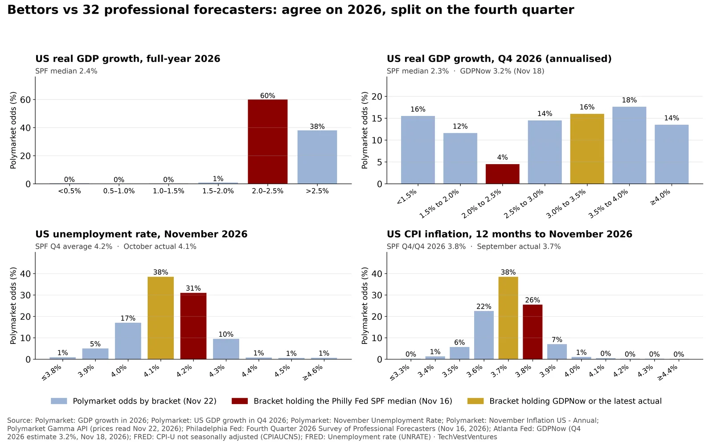
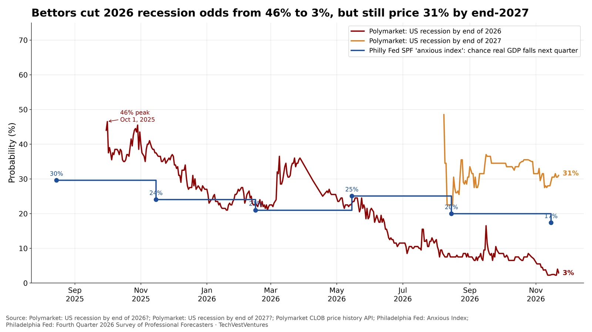

Q9. Crowd vs Pros

Polymarket prices on Nov 22, 2026 set against the Philadelphia Fed's Fourth Quarter 2026 Survey of Professional Forecasters (32 forecasters, released Nov 16) and the Atlanta Fed's GDPNow model. On full-year 2026 growth the two agree: bettors put 60% on 2.0–2.5%, the bracket holding the SPF's 2.4%. On fourth-quarter growth they do not: the SPF median is 2.3% and GDPNow 3.2%, yet bettors spread their money almost evenly from below 1.5% to above 4%, with under 5% on the 2.0–2.5% bracket, a sign of thin trading ($49k volume) as much as of real uncertainty. On November unemployment the market's favourite is 4.1% (38%), just below the SPF's 4.2% fourth-quarter average; on November inflation it favours 3.7% (38%), close to the SPF's 3.8% for the year to Q4. Definitions differ: the SPF gives quarterly averages and Q4/Q4 rates, Polymarket settles on single BLS and BEA releases.
- SPF medians (Nov 16): real GDP 2.3% in 2026:Q4 and 2.4% for 2026; unemployment 4.2% in 2026:Q4; headline CPI 4.0% annualised in Q4 and 3.8% Q4/Q4 for 2026; 10-year CPI 2.49%.
- Polymarket volumes: 2026 GDP $95k; Q4 GDP $49k; November unemployment $16k; November CPI $51k. Small markets move on a few trades.
- Latest actuals: September CPI 3.7% over 12 months (October 2025 has no CPI index because of the shutdown, so FRED gives no October 12-month rate); October unemployment 4.1% (BLS via FRED). Q3 GDP grew 3.4% annualised (BEA advance).
- Resolution: November CPI and unemployment settle on the Dec 10 and Dec 4 BLS releases; Q4 and 2026 GDP on the BEA advance estimate due Jan 28, 2027.
Note: Odds are Polymarket mid prices from the Gamma API on Nov 22, 2026 (ET); they are bettors' prices, not TVV forecasts.
Sources: Polymarket: GDP growth in 2026 Polymarket: US GDP growth in Q4 2026 Polymarket: November Unemployment Rate Polymarket: November Inflation US - Annual Polymarket Gamma API (prices read Nov 22, 2026) Philadelphia Fed: Fourth Quarter 2026 Survey of Professional Forecasters (Nov 16, 2026) Atlanta Fed: GDPNow (Q4 2026 estimate 3.2%, Nov 18, 2026) FRED: CPI-U not seasonally adjusted (CPIAUCNS) FRED: Unemployment rate (UNRATE)

Polymarket's 'US recession by end of 2026' contract (two negative GDP quarters or an NBER call) traded at 44% when it opened on Sep 30, 2025, peaked at 46% on Oct 1, 2025, and is 3% now that only one quarter is left. The newer contract to the end of 2027 started at 48% in August and is 31%. The Philadelphia Fed's forecasters answer a narrower question, the chance that real GDP falls in the next quarter (the 'anxious index'): 17.4% in the Nov 16 survey, down from 20.0%. Both crowds have grown calmer since the spring, but the bettors' 2027 price implies far more risk over five quarters than the forecasters' roughly 17–23% per-quarter odds of a single negative quarter would suggest if those quarters were unrelated: the two measures are not directly comparable.
- SPF risk of a negative quarter, Nov 16 survey (previous in brackets): 2026:Q4 11.5% (20.0%); 2027:Q1 17.4% (21.5%); 2027:Q2 20.9% (22.0%); 2027:Q3 22.8% (20.8%); 2027:Q4 21.8%.
- Polymarket volumes: 2026 contract $2.53M; 2027 contract $27k.
- Polymarket's 'Negative GDP growth in 2026?' contract trades near 3%, in line with the 2026 recession price.
- Anxious-index points are plotted at the middle of the quarter in which each survey was taken.
Note: Polymarket daily prices (UTC) from the CLOB history API, read Nov 22, 2026. SPF values are survey means.
Sources: Polymarket: US recession by end of 2026? Polymarket: US recession by end of 2027? Polymarket CLOB price history API Philadelphia Fed: Anxious Index Philadelphia Fed: Fourth Quarter 2026 Survey of Professional Forecasters